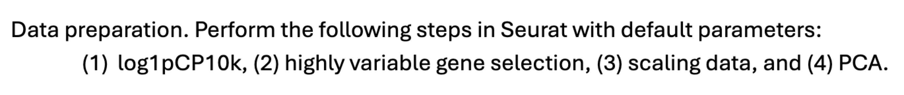
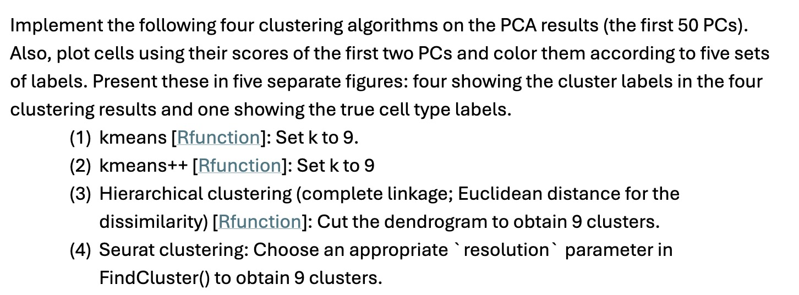
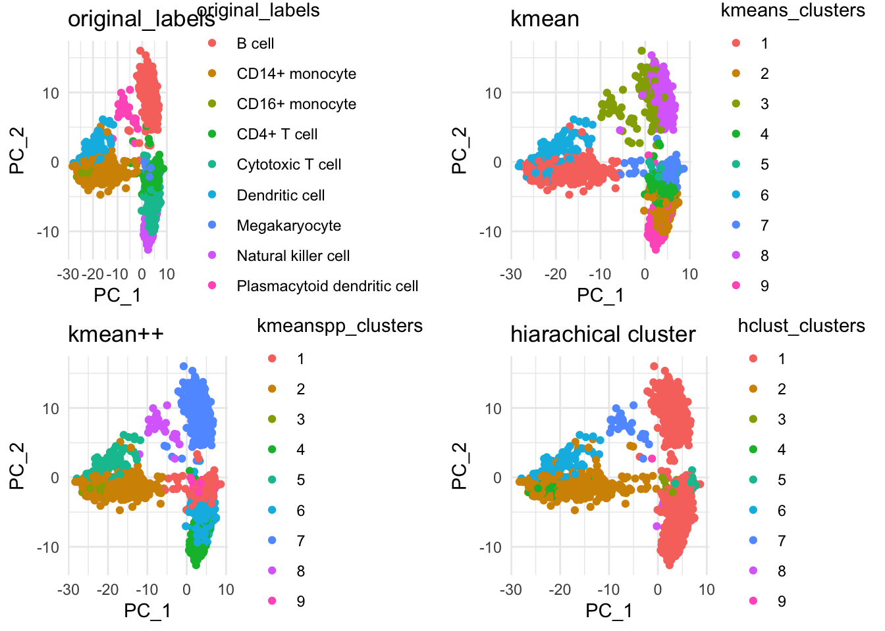
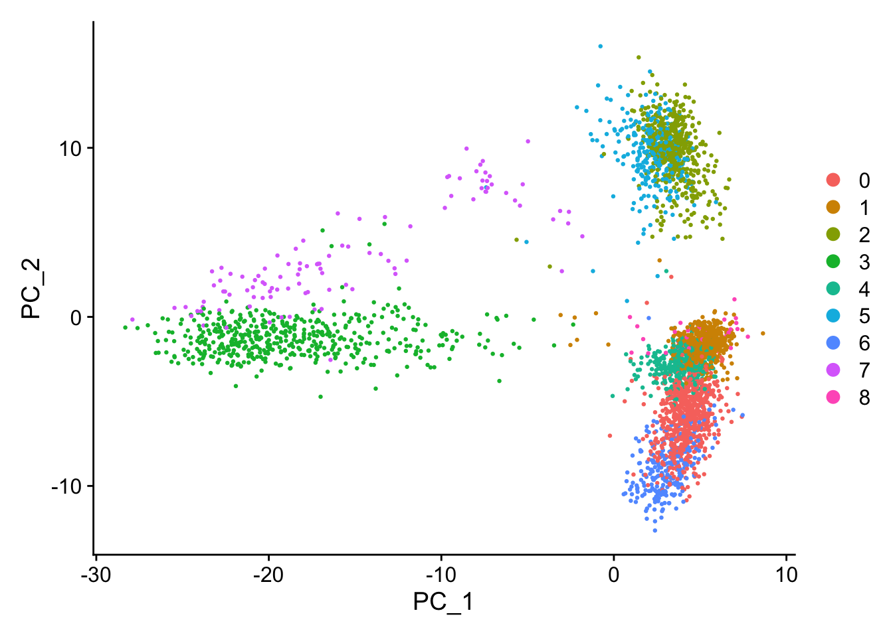
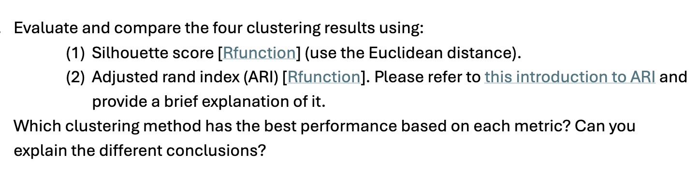
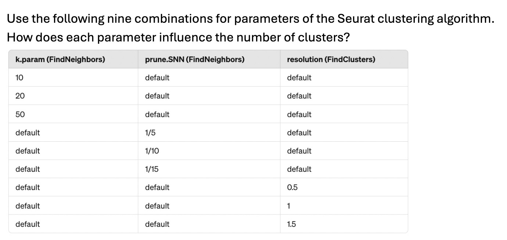
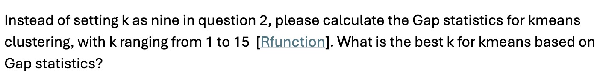
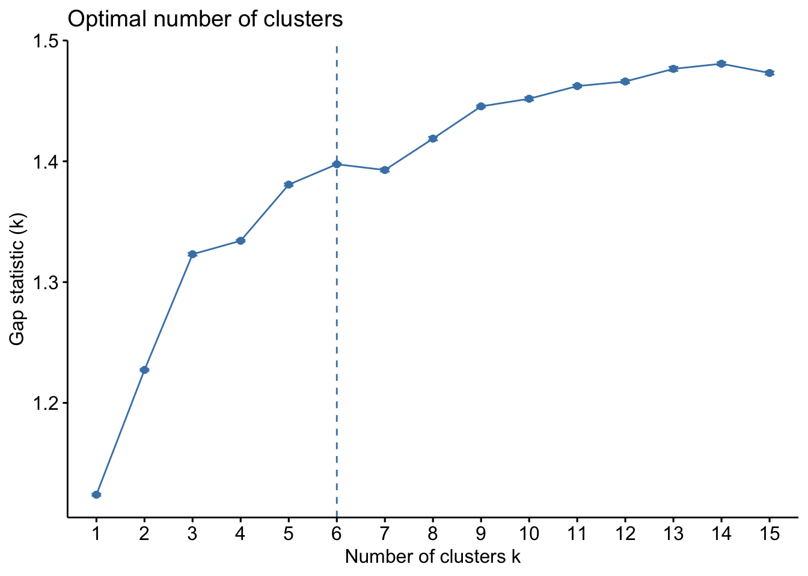
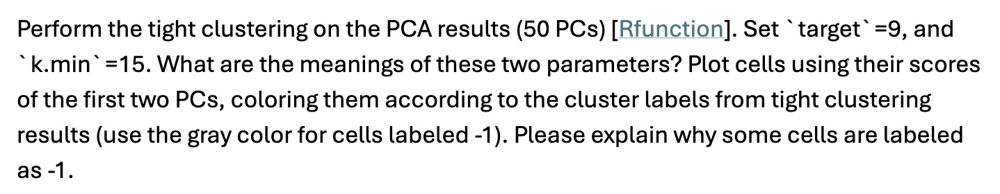
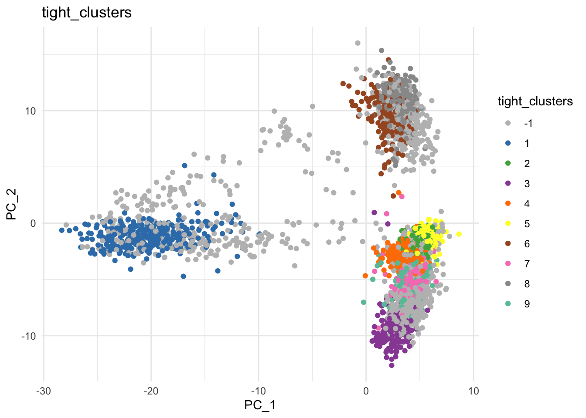

library(Seurat)
library(ggplot2)
library(fastglmpca)
library(ggpubr)
library(motifcluster)
library(cluster)
library(factoextra)
library(mclust)
library(tightClust)Stat M254 Homework 3
Due June 1 @ 11:59PM
In this homework, you should use a new PBMC dataset with the given cell type labels stored as the Seurat object (v5) PBMC_w_labels.rds. This dataset has nine diFerent cell types.
Problem 1

pbmc <- readRDS("data/PBMC_w_labels.rds")pbmc <- NormalizeData(pbmc,
normalization.method = "LogNormalize",
scale.factor = 10000)pbmc <- FindVariableFeatures(pbmc, selection.method = "vst",
nfeatures = 2000)pbmc <- ScaleData(pbmc)pbmc <- RunPCA(pbmc,
npcs = 100)Problem 2

pca_embeddings <- Embeddings(pbmc[["pca"]])[, 1:50]kmeans_res <- kmeans(pca_embeddings, centers = 9)kmeanspp_res <- kmeanspp(pca_embeddings, k = 9)hclust_res <- hclust(dist(pca_embeddings, method = "euclidean"),
method = "complete")
hclust_res <- cutree(hclust_res, k = 9)pbmc <- FindNeighbors(pbmc, dims = 1:50)
pbmc <- FindClusters(pbmc, resolution = 0.23)Modularity Optimizer version 1.3.0 by Ludo Waltman and Nees Jan van Eck
Number of nodes: 3362
Number of edges: 223918
Running Louvain algorithm...
Maximum modularity in 10 random starts: 0.9399
Number of communities: 9
Elapsed time: 0 secondsoriginal_labels <- pbmc@meta.data$celltype
PC1 <- pca_embeddings[, 1]
PC2 <- pca_embeddings[, 2]
kmeans_clusters <- kmeans_res$cluster
kmeanspp_clusters <- kmeanspp_res$cluster
# Create a data frame with PC1, PC2, and cluster labels
df <- data.frame(PC_1 = PC1, PC_2 = PC2, kmeans_clusters = as.factor(kmeans_clusters), kmeanspp_clusters = as.factor(kmeanspp_clusters), hclust_clusters = as.factor(hclust_res), original_labels = as.factor(original_labels))g0 <- ggplot(df, aes(x = PC_1, y = PC_2, color = original_labels)) +
geom_point() +
labs(title = "original_labels",
x = "PC_1",
y = "PC_2",
color = "original_labels") +
theme_minimal()
g1 <- ggplot(df, aes(x = PC_1, y = PC_2, color = kmeans_clusters)) +
geom_point() +
labs(title = "kmean",
x = "PC_1",
y = "PC_2",
color = "kmeans_clusters") +
theme_minimal()
g2 <- ggplot(df, aes(x = PC_1, y = PC_2, color = kmeanspp_clusters)) +
geom_point() +
labs(title = "kmean++",
x = "PC_1",
y = "PC_2",
color = "kmeanspp_clusters") +
theme_minimal()
g3 <-ggplot(df, aes(x = PC_1, y = PC_2, color = hclust_clusters)) +
geom_point() +
labs(title = "hiarachical cluster",
x = "PC_1",
y = "PC_2",
color = "hclust_clusters") +
theme_minimal()ggarrange(g0, g1, g2, g3, ncol = 2, nrow = 2)
DimPlot(pbmc, reduction = "pca")
Problem 3

# silhouette
kmean_sil <- silhouette(kmeans_clusters, dist(pca_embeddings, method = "euclidean"))
kmeanpp_sil <- silhouette(kmeanspp_clusters, dist(pca_embeddings, method = "euclidean"))
hclust_sil <- silhouette(hclust_res, dist(pca_embeddings, method = "euclidean"))
seurat_sil <- silhouette(as.numeric(Idents(pbmc)), dist(pca_embeddings, method = "euclidean"))summary(kmean_sil)$avg.width[1] 0.1519552summary(kmeanpp_sil)$avg.width[1] 0.2065472summary(hclust_sil)$avg.width[1] 0.3325924summary(seurat_sil)$avg.width[1] 0.1373643# ARI
adjustedRandIndex(original_labels, kmeans_clusters)[1] 0.640469adjustedRandIndex(original_labels, kmeanspp_clusters)[1] 0.9153481adjustedRandIndex(original_labels, hclust_res)[1] 0.2202939adjustedRandIndex(original_labels, as.numeric(Idents(pbmc)))[1] 0.6865867By evaluating the average of silhouette score for each cluster method, hierarchical clustering has the highest score, which means it has the best performance in terns of this measure. By evaluating the ARI score, the kmeans++ method has the highest score, which means it has the best performance in terms of this measure.
The difference is because the silhouette score is measures how similar each point is to its own cluster compared to other clusters, while the ARI score measures the similarity between the clustering result and a ground truth (reference) classification. It highlights the difference of focus between 2 methods.
Problem 4

param <- c(10, 20, 50, 20, 20, 20, 20, 20, 20)
snn <-c(1/15, 1/15, 1/15, 1/7, 1/10, 1/15, 1/15, 1/15, 1/15)
resol <- c(0.8, 0.8, 0.8, 0.8, 0.8, 0.8, 0.5, 1, 1.5)
for (i in 1:9){
pbmc <- FindNeighbors(pbmc, k.param = param[i], prune.SNN = snn[i])
pbmc <- FindClusters(pbmc, resolution = resol[i])
}Modularity Optimizer version 1.3.0 by Ludo Waltman and Nees Jan van Eck
Number of nodes: 3362
Number of edges: 49827
Running Louvain algorithm...
Maximum modularity in 10 random starts: 0.8882
Number of communities: 17
Elapsed time: 0 seconds
Modularity Optimizer version 1.3.0 by Ludo Waltman and Nees Jan van Eck
Number of nodes: 3362
Number of edges: 119362
Running Louvain algorithm...
Maximum modularity in 10 random starts: 0.8713
Number of communities: 12
Elapsed time: 0 seconds
Modularity Optimizer version 1.3.0 by Ludo Waltman and Nees Jan van Eck
Number of nodes: 3362
Number of edges: 275174
Running Louvain algorithm...
Maximum modularity in 10 random starts: 0.8512
Number of communities: 11
Elapsed time: 0 seconds
Modularity Optimizer version 1.3.0 by Ludo Waltman and Nees Jan van Eck
Number of nodes: 3362
Number of edges: 66450
Running Louvain algorithm...
Maximum modularity in 10 random starts: 0.8890
Number of communities: 16
Elapsed time: 0 seconds
Modularity Optimizer version 1.3.0 by Ludo Waltman and Nees Jan van Eck
Number of nodes: 3362
Number of edges: 88637
Running Louvain algorithm...
Maximum modularity in 10 random starts: 0.8801
Number of communities: 13
Elapsed time: 0 seconds
Modularity Optimizer version 1.3.0 by Ludo Waltman and Nees Jan van Eck
Number of nodes: 3362
Number of edges: 119362
Running Louvain algorithm...
Maximum modularity in 10 random starts: 0.8713
Number of communities: 12
Elapsed time: 0 seconds
Modularity Optimizer version 1.3.0 by Ludo Waltman and Nees Jan van Eck
Number of nodes: 3362
Number of edges: 119362
Running Louvain algorithm...
Maximum modularity in 10 random starts: 0.9061
Number of communities: 12
Elapsed time: 0 seconds
Modularity Optimizer version 1.3.0 by Ludo Waltman and Nees Jan van Eck
Number of nodes: 3362
Number of edges: 119362
Running Louvain algorithm...
Maximum modularity in 10 random starts: 0.8504
Number of communities: 14
Elapsed time: 0 seconds
Modularity Optimizer version 1.3.0 by Ludo Waltman and Nees Jan van Eck
Number of nodes: 3362
Number of edges: 119362
Running Louvain algorithm...
Maximum modularity in 10 random starts: 0.8080
Number of communities: 16
Elapsed time: 0 secondsBy observing the output, increasing k.params will decrease number of clusters. Decreasing Prune.SNN will also decrease number of clusters (If Prune.SNN is too large, we might get an error since too many of edge is set to 0). In this study, I use 1/7 instead of 1/5 since it gives me error with 1/5. Increasing resolution will increase number of clusters.
Problem 5

set.seed(123)
z <- clusGap(pca_embeddings, FUN = kmeans, K.max = 15, B = 5)fviz_gap_stat(z)
The best k for kmean is 6 based on gap statistic. Due to time constraint, the number of permutation is set to 5 which will not give consistent result because of standard error. If we increase the number of permutation, we will get more consistent result.
Problem 6

tight_clus <- tight.clust(pca_embeddings, target = 9, k.min = 15)Number of points: 3362 Dimension: 50
Looking for tight cluster 1 ...
k = 15
k = 16
1 tight cluster(s) found!
Cluster size: 302 Remaining number of points: 3060
Looking for tight cluster 2 ...
k = 14
k = 15
2 tight cluster(s) found!
Cluster size: 253 Remaining number of points: 2807
Looking for tight cluster 3 ...
k = 13
k = 14
3 tight cluster(s) found!
Cluster size: 190 Remaining number of points: 2617
Looking for tight cluster 4 ...
k = 12
k = 13
4 tight cluster(s) found!
Cluster size: 298 Remaining number of points: 2319
Looking for tight cluster 5 ...
k = 11
k = 12
5 tight cluster(s) found!
Cluster size: 217 Remaining number of points: 2102
Looking for tight cluster 6 ...
k = 10
k = 11
6 tight cluster(s) found!
Cluster size: 199 Remaining number of points: 1903
Looking for tight cluster 7 ...
k = 9
k = 10
7 tight cluster(s) found!
Cluster size: 185 Remaining number of points: 1718
Looking for tight cluster 8 ...
k = 8
k = 9
8 tight cluster(s) found!
Cluster size: 337 Remaining number of points: 1381
Looking for tight cluster 9 ...
k = 7
k = 8
9 tight cluster(s) found!
Cluster size: 155 Remaining number of points: 1226 PC1 <- pca_embeddings[, 1]
PC2 <- pca_embeddings[, 2]
# Create a data frame with PC1, PC2, and cluster labels
df <- data.frame(PC_1 = PC1, PC_2 = PC2, tight_clusters = as.factor(tight_clus$cluster))levels(df$tight_clusters) [1] "-1" "1" "2" "3" "4" "5" "6" "7" "8" "9" custom_colors <- c(
"-1" = "gray",
"1" = "#377EB8",
"2" = "#4DAF4A",
"3" = "#984EA3",
"4" = "#FF7F00",
"5" = "#FFFF33",
"6" = "#A65628",
"7" = "#F781BF",
"8" = "#999999",
"9" = "#66C2A5"
)
ggplot(df, aes(x = PC_1, y = PC_2, color = tight_clusters)) +
geom_point() +
labs(title = "tight_clusters",
x = "PC_1",
y = "PC_2",
color = "tight_clusters") +
scale_color_manual(values = custom_colors, na.translate = FALSE) +
theme_minimal()
target is the total number of clusters we want. k.min is the a starting point for the iterations. The algorithm will stop when k is updated to be smaller than certain threhold. Some cells are labeled as -1 because they are not being assigned to any of the clusters, which is a characteristic of tight cluster.